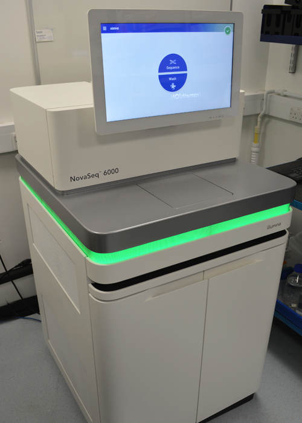

Illumina NovaSeq 6000
Illumina sequencing platforms
Illumina Sequencing
Illumnia sequencing overview
The standard sequence of events for a run involves preparing a DNA library from sample input, attaching library DNA strands to a glass slide known as a flowcell, growing clusters from each DNA strand by bridge PCR and then performing the fluorescence based sequencing on either, the Illumina NovaSeq 6000 or Illumina MiSeq. The data is analysed in the standard Illumina pipeline to produce sequenced 50-300 bp fragments which can then be assembled de-novo or re-mapped to a given sequence depending on the application.
In summary:
- During library preparation dsDNA is fragmented to 200-600 bp, alternatively cDNA is synthesized from fragmented mRNA (either polyA or rRNA depleted)
- Adaptors are ligated to the ends of the strands
- Strands are attached to a flowcell and each strand is amplified several thousand times to form a cluster of identical sequences
- A sequencing primer is annealed to the DNA strand
- Complementary DNA is synthesized to 50 or 300 bp using reversibly blocked fluorescently labelled nucleotides
- Nucleotide incorporation is imaged for each read and bases are called
- For paired-end sequencing, the clusters are re-generated after the first read and sequenced from the complementary strand (this gives additional information since the distance between each end of the DNA fragment is known)
Illumina NovaSeq 6000
We use the Illumina NovaSeq 6000 to provide a versatile platform to support a wide variety of applications from bacterial and fungal pathogenomics to whole human genome sequencing.
The NovaSeq 6000 system provides a more scalable, cost effective architecture for sequencing compared to previous generations of short read sequencers. This is achieved using multiple flow cell types and read length combinations. The NovaSeq S Prime (SP), S1, and S2 flow cells provide quick and powerful sequencing for the majority of high-throughput applications. The NovaSeq S4 flow cell, the largest scaling available, enables the highest throughput of sequencing at the most cost-effective price for a range of applications, making in-house whole genome sequencing (WGS) or whole exome sequencing (WES) studies an attractive and affordable option for more projects.
Key features of the Illumina NovaSeq 6000:
- Cheaper cost per base compared to other Illumina instruments
- Faster sequencing runs
- Multiple flow cell and read sizes for a more scalable approach
- Largest S4 flow cell can sequence
- ~ 24 - 30 whole human genomes at 30X coverage or
- ~ 250 exomes at 100X coverage or
- ~ 200 transcriptomes at 50M reads coverage
Flowcell output / scalability:
| SP | S1 | S2 | S4 | |
|---|---|---|---|---|
|
Number of Reads |
650–800 M | 1.3–1.6 B | 3.3 B–4.1 B | 8-10 B |
|
2 x 50 bp Output |
65-80 Gb |
134–167 Gb | 333–417 Gb | N/A ‡ |
|
2 x 100 bp Output |
134-167 Gb | 266–333 Gb | 667–833 Gb | 1600–2000 Gb |
|
2 x 150 bp Output |
200–250 Gb |
400–500 Gb | 1000–1250 Gb | 2400–3000 Gb |
|
2 x 250 bp Output |
325-400 Gb | N/A | N/A | N/A |
Typical applications:
- De novo genome sequencing (small to large genomes)
- Genome re-sequencing
- Amplicon sequencing
- RNA-seq transcriptome sequencing
- Epigenetics such as ChIP-Seq, ATAC-Seq, Whole Genome Bisulphite Sequencing (WGBS)
- Metagenomics
- Single cell sequencing
Illumina MiSeq
We utilize the Illumina MiSeq for smaller scale projects as well as testing pooled libraries prior to loading on the Illumina NovaSeq 6000. It is capable of automated paired-end reads and up to 15 Gb per run, delivering over 600 bases of sequence data per read.
|
MiSeq Reagent Kit v2 |
MiSeq Reagent Kit v3 |
MiSeq Reagent Kit v2 Micro |
MiSeq Reagent Kit v2 Nano |
|||||
|
Read Length |
2 × 25 bp | 2 × 150 bp | 2 × 250 bp | 2 × 75 bp | 2 × 300 bp | 2 × 150 bp | 2 × 250 bp | 2 × 150 bp |
|
Number of Reads |
12-15 million | 22–25 million | 4 million | 1 million | ||||
|
Output |
750–850 Mb | 4.5–5.1 Gb | 7.5–8.5 Gb | 3.3–3.8 Gb | 13.2–15 Gb | 1.2 Gb | 500 Mb | 300 Mb |
Typical applications:
- Targeted gene sequencing
- Small genomes
- Amplicon sequencing
- 16S metagenomics
N.B. Low diversity samples such as amplicons, including 16S, 18S, ITS and CO1, require much lower loading concentration so the output and number of reads would typically be reduced to 30%-50% of those quoted above.